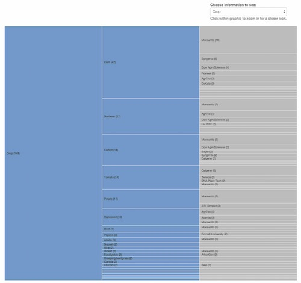
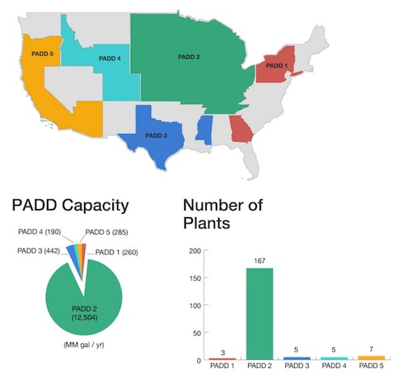
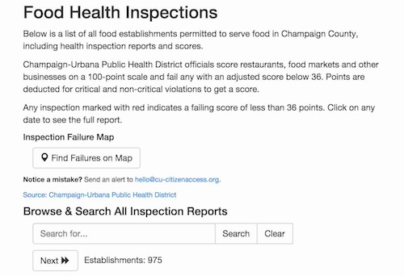
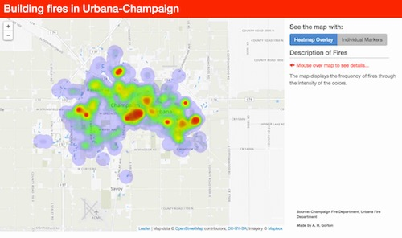
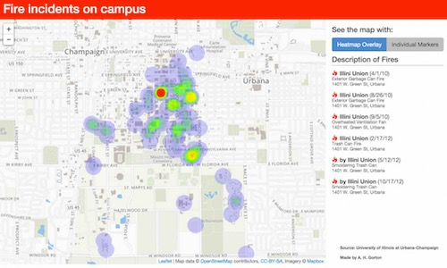

Visually Exploring GMO Petitions

This is an interactive graphic showing a breakdown of GMO petitions submitted by agriculture companies to the USDA.
It was built using d3.js and is hosted on GitHub.
Click here to interact with the graphic.
Ethanol Capacity

These are a series of static info-graphics created to show the production capacity at various regions throughout the country involved in the production of ethanol.
Graphics were developed using Adobe Illustrator and the interactive table is built using JQuery DataTables. The page is hosted on GitHub.com.
It is available here.
Restaurant Inspection Score Database

This is an ongoing project for CU-CitizenAccess.org to track health inspections for local area restaurants.
The application is built using Python, GeoDjango, PostGres, and hosted on Heroku.
A Python script runs weekly to crawl the Champaign-Urbana Public Health website for changes in their inspection reports.
This has been enormously popular service for our readers. We continue to roll out incremental improvements over time, and likewise use the data to drive scholarly research and analysis for reporting.
2014 Fire Maps


These are two separate and similar mapping projects tracking fires throughout the Urbana, Champaign, and the University of Illinois campus.
Data was requested through FOIA through the local government.
The map is made using leaflet.js and served from the CU-CitizenAccess.org GitHub repository.
Champaign-Urbana map is available here University of Illinois map is available here.
Copyright © 2015 Powered by MWeb, Theme used GitHub CSS.